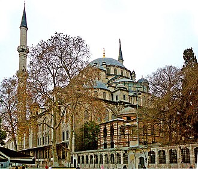

Presentation
La Mosquée Fatih ou Mosquée du Conquérant est une mosquée impériale ottomane située dans le district de Fatih (district) en Turquie. Elle porte le nom du Sultan ottoman Mehmed II, ou Fatih Sultan Mehmed pour les turcs, qui en 1453 conquit Constantinople, jusqu'alors capitale de l'empire byzantin. C'est l'un des plus grands exemples d'architecture ottomane et islamique à Istanbul.
مسجد الفاتح هو مسجد بني في عهد الدولة العثمانية، يوجد في منطقة الفاتح في مدينة إسطنبول التركية، ويعد مثالا عظيما على فن العمارة الإسلامية التركية في إسطنبول، ويمثل مرحلة مهمة من تطور فن العمارة التركية القديمة. وقد سمي هذا المسجد على اسم السلطان محمد الفاتح، السلطان العثماني الذي فتح القسطنطينية عام 1453.
The Fatih Mosque is an Ottoman mosque off Fevzi Paşa Caddesi in the Fatih district of Istanbul, Turkey. The original mosque was constructed between 1463 and 1470 on the site of the Church of the Holy Apostles. Seriously damaged in the 1766 earthquake, it was rebuilt in 1771 to a different design. It is named after the Ottoman sultan Mehmed the Conqueror, known in Turkish as Fatih Sultan Mehmed, who conquered Constantinople in 1453.
Fatih Camii, İstanbul'un Fatih ilçesinde yer alan Osmanlı camisidir. 1463-1470 yılları arasında II. Mehmed tarafından şehrin yedi tepesinden birinde yaptırılmıştır. Külliye içinde 16 adet medrese, dârüşşifâ, tabhane, imaret, kütüphane ve hamam bulunmaktadır. 1766 depreminde yıkılan cami onarılarak 1771'de bugünkü hâlini almıştır.
Masjid Fatih Istanbul adalah sebuah masjid peninggalan Kesultanan Utsmaniyah yang berada di kawasan Fevzi Paşa Caddesi, distrik Fatih, Provinsi Istanbul, Turki. Masjid ini awalnya dibangun pada tahun 550 di situs bekas Gereja Para Rasul Suci, yang kemudian diubah menjadi masjid antara tahun 1463 hingga tahun 1470. Namun bangunan ini rusak parah oleh gempa bumi yang terjadi pada tahun 1766 dan dibangun kembali pada tahun 1771 dengan desain yang berbeda. Masjid ini dinamai setelah Sultan Mehmed II menaklukkan Konstantinopel pada tahun 1453.
فاتح مسجد ترکی کے شہر استنبول کے ضلع فاتح کی ایک جامع مسجد ہے جو عثمانی عہد میں قائم کی گئی۔ یہ استنبول میں ترک اسلامی طرز تعمیر کا ایک اہم نمونہ ہے اور ترک طرز تعمیر کے ایک اہم مرحلے کی نمائندگی کرتی ہے۔
Die Fatih-Moschee ist eine Moschee im Istanbuler Stadtteil Fatih. Sie ist nach dem Eroberer Konstantinopels, Sultan Mehmed II., benannt.
La mezquita de Fatih es una mezquita imperial otomana ubicada en el distrito de Fatih, en Estambul, Turquía. Fue el máximo ejemplo de arquitectura turco-islámica en Estambul y representó un escalón importante en el desarrollo de la arquitectura otomana clásica.
La moschea di Fatih è una moschea ottomana ubicata nel quartiere di Fatih a Istanbul, in Turchia. Ricostruita dopo essere stata distrutta da un terremoto nel 1766, essa è la prima grande architettura turco-islamica a Istanbul e ha rappresentato una tappa importante nello sviluppo dell'architettura ottomana.
A Mesquita de Fatih ou Mesquita do Conquistador é uma mesquita otomana situada no distrito de Fatih, Istambul, Turquia. Foi um dos maiores exemplares da arquitectura turco-islâmica de Istambul e representou um importante passo no desenvolvimento da arquitetura otomana clássica.
De Fatih-moskee is een grote moskee in de Turkse stad Istanbul. De moskee ligt centraal in de gelijknamige wijk en district Fatih.
法齐赫清真寺，意为“征服者清真寺”，是一座奥斯曼帝国清真寺，位于土耳其伊斯坦布尔的法提赫区。它是伊斯坦布尔最大的土耳其 - 伊斯兰建筑之一，代表土耳其建筑发展的重要阶段。
Мече́ть Фати́х или Мече́ть Завоевателя — одна из больших мечетей Стамбула, расположенная в европейской части города в районе Фатих.
Moscheea Fatih este o moschee din orașul Istanbul, din Turcia. Numele ei se traduce ca Moscheea Cuceritorului, deoarece a fost construită de către sultanul Mahomed al II-lea, cel ce a cucerit Constantinopolul.
På kartan
Dokument och länkar
- Wikipédia — Français
- Wikipédia — العربية
- Wikipédia — English
- Wikipédia — Türkçe
- Wikipédia — Bahasa Indonesia
- Wikipédia — اردو
- Wikipédia — Deutsch
- Wikipédia — Español
- Wikipédia — Italiano
- Wikipédia — Português
- Wikipédia — Nederlands
- Wikipédia — 中文
- Wikipédia — Русский
- Wikipédia — Română
- Wikidata — Q756189
Data: Wikidata (CC0), uppdateras var tredje månad. Året är byggnadens tidigaste kända byggdatum: för en byggnad som blev moské senare (som Hagia Sofia) är det den ursprungliga byggnadens. Foton: Wikimedia Commons, upphovsperson och licens på varje fotos sida.